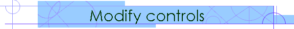
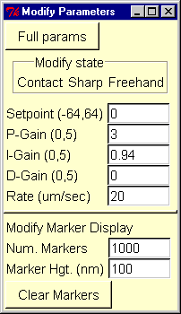
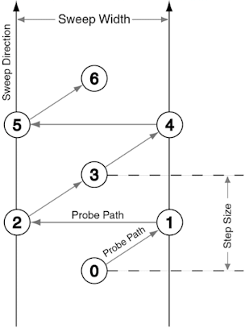

|

|
Modify Parameters Dialog BoxThis window allows you to control the behavior of Modify Mode. The parameters control how hard the AFM tip presses on the sample during a modification, how the tip moves, and whether it moves automatically or under the user's direct control. The button at the top, labeled either Quick or Full, controls which set of modify controls are displayed. Quick controlsThese controls are designed to take effect immediately, so they can change the parameters that are used during some kinds of modifications. They are "tweak" controls, so if a parameter is slightly wrong it can be adjusted easily, in a control panel which will not obscure the 3D view of the surface.  The Modify state box shows what will happen if a modification is performed - which mode, style and tool will be used. The controls available are Setpoint, P-Gain, I-Gain, and D-gain, and have the same functions as in the ThermoMicroscopes SPMLab software and the Full Controls. The setpoint can be changed during a modification, which means the normal force the tip is applying can be changed. Modify Marker DisplayThese controls are always visible at the bottom of the Modify Parameters dialog box. They control the white lines that indicate a modification. Num Markers sets how many are visible at once. A very large number can slow down the graphics display. Marker Hgt. (nm) is an offset in nanometers above the surface. It insures that the lines are drawn at least some distance above the surface, so they are easily visible. Note that it only affects marker lines which haven't been drawn yet - you must rewind the stream file to increase the marker height for modifications which have already been performed. The height of the white lines is also determined by the height measured by the SPM - this allows you to see the path the tip traveled during the modification. The Clear Markers button clears all existing modification markers. Replay the stream to see the modification markers again. Full Controls[Click to see a full-sized image] ModeOscillating or Contact. These modes are the same as those provided by the Thermo software. This dialog provides an additional set of parameters so that you can make an automatic switch to a different mode and higher-force settings when you do a modification. The NanoManipulator will automatically switch from oscillating mode imaging to contact mode modifications without withdrawing the tip. This is most often what is done, because contact mode can provide a higher force for modification than oscillating mode, and contact mode allows measurement of lateral force.
Note that not all parameters are meaningful for each kind of feedback. Contact mode feedback ignores all parameters after Rate, while Phase Angle is used only by Phase Oscillating feedback. It is unlikely that you will want to change many of the parameters used for Oscillating feedback, since the NanoManipulator does not provide the oscilloscope and graph displays that the ThermoMicroscopes software provides to assist in setting these parameters. These controls are available mainly to record the values you set up in the ThermoMicroscopes software. Offset CompensationThe checkbox Offset Comp on controls offset compensation. When the image mode is oscillating and the modify mode is contact (or vice versa), there will be an offset between the measured height of a spot on the surface in contact mode and in oscillating mode. Offset compensation will move the sample points in modify mode so they feel like they are at the same height as those acquired when scanning. It does this by pausing for a short time when the user first enters modify mode, and storing the offset measured. During the course of the modification, all points are shifted by the offset before they are used to feel the sample. Usually there is no reason to disable offset compensation. StyleThe style controls how the tip moves during one step of a modification. How big a step is depends on what kind of tool is used to do the modification - please refer to the next section. SharpThe AFM tip stays on the surface, using the feedback parameters to maintain a constant force. SweepThe AFM tip stays on the surface, maintaining a constant force. For each step forward, it makes a side-to-side motion, with the width specified. This makes the tip act more like a spatula or a broom, pushing an object on the surface all along the width of the sweep, nudging it forward. It can also be used to clear an area of the surface. If you are using the freehand tool, the direction of the sweep is determined by the twist of the Phantom pen, and is indicated by lines flanking the hand icon. If you are using the line tool, the sweep is constrained to be perpendicular to each line segment.
 This illustration shows how the tip moves using the sweep style with the line tool. The sweep width parameter is shown at the top, and the line tool's step size parameter is show on the right. Each step takes 3 data points. Here the tip starts at point 0. It takes a step forward by moving to points 1, 2 and 3 in order. The next step takes it to points 4, 5 and 6. SewingThe AFM tip punches down to the surface, then retracts and moves forward, punching down again. This mode avoids putting any lateral forces on the tip or the sample, so it can make a sharp cut in a sample, avoiding "snow-plow" effects. The force applied each time the tip punches down is controlled by the setpoint parameter of the Mode used.
Note that it is not possible to use the Sewing style with Oscillating feedback or the Slow Line tool - these controls are disabled if you choose Sewing style. Force CurveAt each point, the tip will take a Force-Spectroscopy Curve, and return the results. This can be quite slow, so be careful before requesting a large number!
For proper operation, this relation should hold: Pullout height <= Start Height <= End Height. These heights are measured relative to the surface of the sample, which is defined to be zero and measured in step 2 below, where the tip is put into contact mode feedback. Positive heights are below the surface, and negative heights are above the surface; i.e. heights are in terms of "depth" into the surface. Here are the steps the SPM performs if you've chosen to do 2 half-cycles:
Note that it is not possible to use the Force curve style with Oscillating feedback or the Slow Line tool - these controls are disabled if you choose Force curve style. ToolsFreehandThe tip follows the motion of your hand during a modification. The shape of the surface during the modification is displayed haptically, so the user can respond to dynamic changes. Typical modification walkthrough:
It is also possible to alternate between imaging and modification parameters without scanning. While holding the Phantom button, hit Magellan button 4 (Commit) to use modification parameters, then hit Magellan button 8 (Cancel) to switch back to image parameters. This can be done repeatedly, without the tip ever scanning the surface. This allows you to feel the shape and position of an object that might not remain in a fixed position during scanning. LineThe modification is planned by specifying a step size for how often the AFM is to collect data, and then specifying the endpoints of line segments where the tip will travel. The modification is automatically performed. The uniform tip motion allows sensitive measurements of the lateral force (if you are using sharp style). When using the sweep style, the tip will move side-to-side as it moves along the polyline, and when it gets to a turn, it will sweep out an arc to turn the corner. The sweep is always perpendicular to the direction of motion. Note that a line mode modification is not interruptible - once it has been issued, it must complete. It is also not possible to change the setpoint during a line modification. Use slow line tool if you want to interrupt the modification part way through or change the setpoint.
Typical modification walkthrough:
Constrained FreehandThe user specifies two endpoints of a line, and then any subsequent motions are constrained to that line. The user can feel the sample and modify while the tip motion is constrained. Typical modification walkthrough:
It is also possible to hit the Cancel button while modifying. This will erase the current constraint line, and allow you to specify a new one without scanning. Slow LineControls like those of a VCR help move the tip. The user specifies the endpoints of a line or polyline. Hit Commit to begin using modification force. The tip moves to the first endpoint and sits there. If the user hits Play in the Modify live controls window, the tip will request a new point, and move forward as soon as it gets a response from the AFM. Hit Pause to stop the tip's motion. If the user hits Step, the tip will move forward one step-size and wait. Hit cancel to resume scanning.
Typical modification walkthrough: Please see the Modify live controls page. A Note about NamesYou may wonder why we have both a line tool and a slow line tool. The line tool was developed first, and we made it perform as fast as possible, because it is the tool used most often. One consequence is that the whole line is sent as one command to the SPM software, and it cannot be interrupted after the command is sent - the line modification must be allowed to run its course. We developed the slow line tool specifically to be interruptible, and to allow other measurements to occur while the modification is taking place. By stepping forward slowly, it is possible to stop just as the tip makes contact with a structure on the sample, and begin taking electrical measurements, for example. Accept and RevertThe Accept button will remember changed parameters so the SPM will use them during the next modification. It will turn pink when the parameters have been changed from the current modify parameters. The Revert button resets the controls so they show the modify parameters the SPM used last.
|
{kind=link}